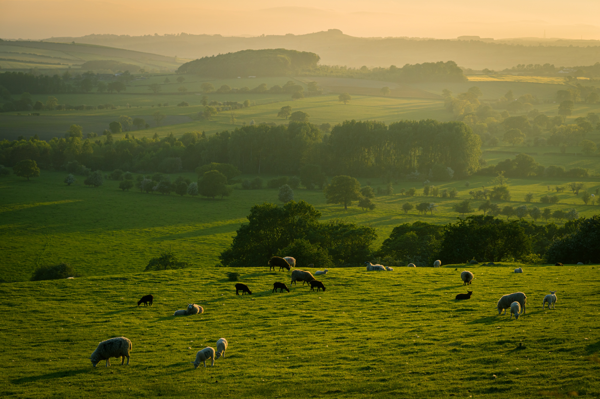

La vie à la campagne
Je m’appelle Carl et j’habite à la campagne. Je suis marié et j’ai deux enfants. Quand mes enfants vont à l’école, je m’occupe de la ferme. Je nourris les animaux, je trais les vaches et je récolte les légumes. Après, je me repose et je vais boire un café avec ma femme. J’aime la campagne parce que c’est calme et parce qu’il y a beaucoup d’animaux. De plus, les gens sont sympas et chaleureux. Je peux aussi manger des produits bios et de bonne qualité.
Vocabulaire
Je m’appelle (s’appeler) 私の名前はJ’habite (habiter) 住む
Je suis marié (être marié) 私は結婚しています
J’ai (avoir)
Deux enfants二人子供
Quand時
Mes enfants私の子供複数形
Vont (aller)行く
À l’école 学校に
Je m’occupe (s’occuper)世話にする
La ferme農場(女性形)
Je nourris (nourrir) ~に食べ物を与える
Les animaux (animal)動物(複数形)
Je trais (traire)(牛の乳)を絞る
Les vaches (vache)
Et Je récolte (récolter)
Les légumes (légume)
Après
Je me repose (se reposer)
Je vais (aller)
Boire
Un café
Avec
Ma femme
J’aime (aimer)
La campagne
Parce que
C’est calme
Parce qu’ = parce que
Il y a Beaucoup d’ (beaucoup de)
De plus
Les gens
Sont (être)
sympass (sympa)
Chaleureux (chaleureux)
Je peux (pouvoir)
Aussi
Manger
Des produits bios
De bonne qualité
Questions
1) Comment s’appelle le narrateur ?2) Qu’est-ce qu’il fait quand ses enfants vont à l’école ?
3) Après le travail, qu’est-ce qu’il fait ?
Cliquez pour les réponses
Vrai ou faux?
1) Il est célibataire2) Il n’aime pas la campagne
3) Il a des enfants
4) Il s’appelle Lucas
Cliquez pour les réponses